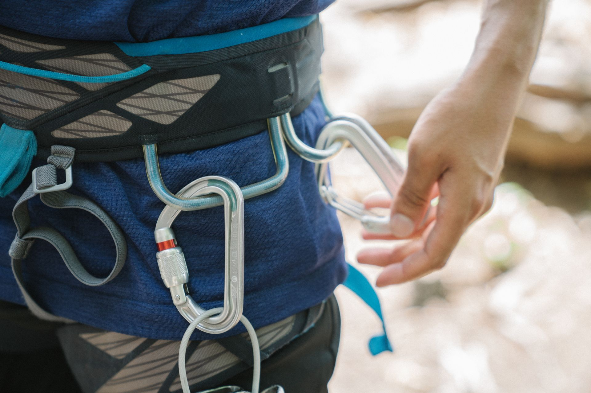

One-sentence thesis as a question. The model knows PHP and Symfony from training. But does it know your project? The difference is not the next, better model, but what it gets at the moment of need.
30 seconds, no CV. One sentence per tile, the third one is the bridge to the talk.
How it went for us
Getting project knowledge into the model
1 · Bare prompt
Knowledge: training dataOur project: guessed
2 · AGENTS.md
Knowledge: prose we wrote2,000 lines and growing
3 · This talk
Knowledge: facts from the appAsked, not described
Era 1: the model guesses because it has to answer. Era 2: our reaction, instructions. Remember this slide, we'll come back to it as the "skills only" side.
The word for it
Harness
Everything around the model.
Contextwhat gets in, and when
Toolsfacts from the app, on demand
Checksthings that know, not guess
The model is replaceable. The harness is yours.

A climbing harness does not climb for you. It decides what a fall costs. Same with the agent: the model climbs, the harness catches. Photo: Katya Wolf, Pexels.
A simple example · before any tooling
Clean Sylius, one customization
Setup
Sylius Standard 2.39 products × 5 variants
Ticket
Show variants and stock on the product card
Result
45× the same SELECT112 queries on one page
The profiler sees it. Will the agent ask?
Context before recording 1. The customization is correct in terms of conventions (hook, not override), the bug sits in the data path: a loop in the template over a relation = classic N+1. Measured on Sylius Standard 2.3 (1 Nov): 112 queries, of which 45 are the same SELECT on option values. Do NOT give the baseline from the stage — if someone asks: "part of it is Sylius itself, but our ~40 is one template". Screenshots re-shot on 2.3 (1 Nov). Both recordings get the same page and the same prompt.
Demo · run 1 · bare agent, no Mate · recording ×3
0:00 · prompt
One sentence. No hints.
The page …/t-shirts/men is slow for me. Find the cause.
0:07 · first move
Starts with git. What changed recently?
git show --stat HEAD~1 && git show HEAD~1 -- .
0:16 · the guess
Names the N+1 from the diff. Now has to prove it
…which is a classic N+1. Let me confirm by measuring
The cause is the product card template added in the last commit…
Same mechanism as run 2: arrow = next block, the video jumps there and plays the fragment, then stops. The model knows Symfony: it tried curl on /_profiler and parsed the HTML with regex. The knowledge was there, the path was missing. This run: 2:41 real time, 10 turns, 5.9k output tokens; median of 6 bare runs 2:45 (1:07–3:42). The guess comes from the diff in 16 s, that is training; the next two and a half minutes are the path to the fact. Recording ×3, times pinned to the 1 Nov recording (runs/20261101-115924).
# what init left behind✓ mate/ config, extensions.php, AGENT_INSTRUCTIONS.md, src/
✓ composer.json extra.ai-mate
✓ AGENTS.md instruction block for the agent
✓ CLAUDE.md @AGENTS.md
✓ .agents/skills/ 5 skills: profiler-debugging, request-triage, service-inspection, …
One dev dependency, init takes seconds and no network. The agent gets instructions and skills in files. Between recording 1 and 2, this is the only thing that changes. It hands the agent the profiler and the container. Details after the second run.
No .mcp.json, but that comes at the end. Facts: interactive init also runs discover (skills); with --no-interaction skills are only installed by `mate discover`. init also writes mate/.gitignore and mate/config.php. Re-check the skill names and count on the demo stack: core alone adds two skills.
Demo · run 2 · same prompt, new session, with Mate
0:00
The same prompt as in run 1
The page …/t-shirts/men is slow for me. Find the cause.
0:03 · first line
Goes straight to the profiler, via Mate
I'll use the Mate profiler tooling. Loading the profiler skill
The cause is an N+1 query pattern introduced by the product card…
Arrow = next block: the video jumps to it, plays the fragment and stops by itself. Left arrow goes back the same way. Space pauses/plays. This run: 0:48, 7 turns, 3.2k output tokens, the N+1 named with the profiler fact at 0:30; median of 5 runs 0:48 (0:31–1:44). Real time, times pinned to the 1 Nov recording (runs/20261101-122826). Mate init was the only thing that changed between runs.
What you just saw · the two runs on the same clock, each tick a tool call
The model didn't get smarter. The harness did.
1Fable 5.1bare
0:16 guess2:41 proven
12 turnsmedian of 6 runs · 2:45
2Fable 5.1with Mate
0:30 fact0:48
6 turnsmedian of 5 runs · 0:37
3Haiku 5.5with Mate
0:38 fact0:58
11 turnsmedian of 5 runs · 0:27
0:001:002:00
tool call (one API turn may hold several) N+1 named, no evidence yet N+1 with the profiler fact
Comparison right after the two recordings, while both are fresh. The bars are the three pinned recordings on one clock (generated from their transcripts by tools/timeline.py), each tick a tool call; the numbers on the right are medians of the series. Point to make: the bare run names N+1 at 0:16, from the diff and from training, and then spends 2.5 minutes proving it by hand; with Mate the first mention already comes with the profiler fact. Mate does not make the guess better, it shortens the road from guess to fact. Same prompt, same project (Sylius 2.3), new session each time, project memory empty, project reset after every run; 5 runs per row (6 for bare Fable), medians, 1 Nov 2026. Bare Fable: 12 turns (6–15), ends at 2:45 (1:07–3:42), 7.5k output tokens, 591k input incl. cache; it names the N+1 from the diff after ~20 s (training) and then proves it by hand: curl, unserialize of the profile in PHP, hook off for a baseline. With Mate: 6 turns, N+1 with the profiler fact at 0:37 (0:29–1:44), ends 0:48, 3.1k output, 299k input. Roughly 2× fewer turns, 2.5× less output, 3.4× faster. Haiku 5.5 with Mate: 11 turns, fact at 0:27, ends 0:57, 6.8k output. Also measured, in notes only: Opus 5.5 bare 1:20 / with Mate 0:28 (fastest row of all); Haiku 5.5 bare 1:08, faster than bare Fable; Haiku 4.5 keeps fixing after the diagnosis in both variants, 45–53 turns. Every model finishes faster and cheaper with Mate than the same model without. Recording 3 only if time allows (clock under 28:00). Full table in results.md in the repo. Pyramid and "what Mate is" come next as the explanation.
Why 5 minutes · Dave Liddament's pyramid
What the model doesn't know, it guesses
Who enforces it
Bottom: codeMiddle: the modelTop: a human
The 5 minutes
The answer lived at the bottomThe agent spent them one floor up
Everything above works only because the base is solid.
Diagnosis of the 5 minutes from recording 1. Liddament's pyramid from SymfonyLive Berlin, Johannes added the profiler and the container to the base. Highlight from the bottom: code, model, human. Profiler, container, logs: things that don't guess, they know. The bare agent knew the bottom existed and scraped it by hand; it spent most of the time one floor up, inferring from code. Transition to the next slide: "Mate is exactly access to the bottom of this pyramid".
Symfony AI Mate
What Symfony Mate is
What
A CLI the agent calls, was an MCP serverPart of symfony/ai, dev dependency
Extensible
Your own tools and skills in the projectShared as a Composer package
The rest of symfony/ai: your application uses AI. Mate: AI uses your application.
Entry: "Mate is exactly access to the bottom of the pyramid". Mate does not plug into the kernel: its own DI container, tools and skills discovered from Composer. To share tools between projects, an extension is a regular Composer package. MCP: it started as an MCP server and the server is gone, Mate is a CLI now; why, on #16. Like Johannes: outside-in. The rest of symfony/ai lets your application use AI. Mate does the opposite.
How to extend it · four layers
Where the tools come from
You write
Your projectYour domain. The rules only you knowmate/src · mate/skills
MateThe engine: discovery, the CLI, skills installer. No tools of its ownsymfony/ai-mate
The packages know Symfony and Sylius. Only you know your project.
Bottom up: Mate alone is only the engine, it ships no domain tools. The Symfony extension gives the generic Symfony layer, that is what run 2 used. The Sylius extension sits on top with the Sylius domain, and a PrestaShop extension would sit in exactly the same place. The top layer is the point of the next slides: your own tools and skills, in the project, no package needed. The installation slide showed mate/src already waiting after init; mate/skills is one line in composer.json, slide 15.
Your own tool · 1 of 2
A method. An attribute. Types are the schema.
// mate/src/ResolvePrice.php
final class ResolvePrice
{
public function __construct(private PriceResolver $prices) {}
#[MateTool( name: 'app_resolve_price', description: 'Final price for a variant, channel and group, with the price list and the rule that won.',)]
public function __invoke(
string $variant,string $channel,?string $customerGroup = null,
): array {
return $this->prices
->explain($variant, $channel, $customerGroup);
}
}
Your service, injected as usualThe attribute is the integrationParameters become the schema
The example: a B2B shop with its own pricing, price lists and customer groups, the final price is the result of logic on data in the admin. No file holds it, so no skill or instruction can hold it either, that is what makes it a tool and not a skill. The class: inject the project's own price resolver, Mate has its own container so DI works like in the app. One attribute, name and description written for the model. Typed parameters, nullable with a default, become the input schema, required list included. Schema shape approximate, re-check on the real stack.
Your own tool · 2 of 2
Discover. Then the agent asks.
$ vendor/bin/mate discover
✓ mate/src 1 new tool: app_resolve_price› ACME, gold group, sees 79 instead of 99 for TSHIRT-M. Why?
● Resolving the price for ACME's group via Mate
● Bash(vendor/bin/mate tools:call app_resolve_price
--variant=TSHIRT-M --channel=B2B --customerGroup=gold)
{ "price": 7900, "list": "B2B-GOLD", "rule": "tier 50+" }
● Not a bug. ACME is in the gold group, the B2B-GOLD list
applies the 50+ volume tier. The 99 is the retail list.
No registration
mate/src is scanned since initOne list with the package tools
Facts, not guesses
Without it: reads code, guessesWith it: one call, the rule that won
discover picks the class up because init already put mate/src on the scan list, no config, no service definition, and tools:list shows it next to the package tools. Then a real question a support person asks every week. Without the tool the agent reads the pricing code and the fixtures and guesses, or asks you. With it: one call, the answer carries the price list and the rule that won. Same move as the profiler in run 2, only this fact is yours, not Symfony's. Mock-up of an agent turn, format like the recordings; if time allows, record a short real clip.
Your own skill
The tool says how it is. The skill says when to ask.
// mate/skills/pricing/SKILL.md
---
name: pricing
description: Use for any question about a price a customer sees.
---
- Call app_resolve_price before reading the calculator code
- Price lists live in the admin, never in config or fixtures
- Unknown customer group: ask, do not assume retail
A directory with SKILL.md
Three lines of judgmentOne line in composer.json
Installed like the rest
Installed by mate discoverLands in .agents/skills
Works in other projects too? Make it a Composer package.extra.ai-mate · github.com/MatesOfMate/extension-template
Skill versus tool in one sentence: the skill is what you know, the tool is what has to be checked. Project skills: extra.ai-mate.skills pointing at mate/skills in composer.json, discover installs them into .agents/skills next to the package ones. Extension only when the tool and skill need to travel between projects: a regular Composer package with extra.ai-mate (scan-dirs, instructions, skills), start from extension-template. That is exactly what the Sylius extension is.
Synergy · why one package
Skills alone. Tools alone. Together.
Skills only
The model keeps guessing2,000 lines of AGENTS.md
Tools only
A binary in vendorNobody tells the agent to use it
Mate Lab · 10 runs per task
CLI task 10/10
CLI task 20/10
MCP task 13/10
MCP task 22/10
Together
The skill says whenThe tool says how it is
Mate Lab · same two tasks
CLI+skills task 110/10
CLI+skills task 25/10
That's why the skill ships in the same package as the tools.
You saw it a moment ago: profiler skill + profiler tool. One sentence on MCP, no more: Mate removed its MCP server after this measurement, transport does not decide, visibility does. Johannes: "kill the transport, not the capability". If asked: MCP was only a transport, skills are read from files by every agent anyway, CLI + files is cheaper (no process, no handshake). Mate Lab (Johannes): Haiku, 2 tasks × 10 runs, metric = whether the agent reached for Mate at all. Binary alone 0/10 and 0/10. MCP server, tools visible through the protocol but no skills: 3/10 and 2/10. CLI + skills and instructions in files: 10/10 and 5/10. Visibility decides. Johannes himself: a pattern, not statistical proof. Mate distributes skills natively since 0.12, since 0.13 they are installed as copies into .agents/skills; symfony/ai-mate is at 1.0.0-BETA1 as of 1 Nov 2026 and the mechanism is unchanged.
Nothing here you couldn't write yourself.composer require --dev sylius/sylius-ai-dev-tools
Same mechanism as slides 13 to 15, just more of it. Honestly: our extension boots the host kernel, the opposite of Mate's core, because hooks, grids and decorators can't be read from the XML dump. Skills: sylius-dev gives the mental model and the "Mate first" protocol (profile, then plugins and decorators, then hooks, before the first file is created). Refuse-rules live in a separate file loaded on demand, SKILL.md itself is 30 to 90 lines. sylius-verify is the definition of done: verify pass, cache, Playwright gate. Count checked 1 Nov: 27 #[MateTool], 5 resource templates, 6 skills.
Ecosystem · Mate extensions
Same pattern, many domains.
Official · symfony/ai
SymfonyMonolog
the profiler from recording 2
MatesOfMate
PHPStan · PHPUnitComposer · Rector
template · awesome-mate list
Products
Sylius · Sulu · OroOpenDXP · Softspring
each over its own domain
The list: github.com/MatesOfMate/awesome-mate Start your own: github.com/MatesOfMate/extension-template
Official bridges live in the symfony/ai monorepo: Symfony (container, profiler, the one from recording 2) and Monolog (logs). Versions as of 1 Nov 2026: symfony/ai-mate and the Symfony and Monolog bridges are 1.0.0-BETA1, our extension accepts ^1.0. MatesOfMate is the community organization: PHPStan, PHPUnit, Composer, Rector at 0.7.2, already on the 1.0 beta, plus self-review, extension-template, awesome-mate. Products: Sylius (ours), Sulu (Johannes, 0.3.0), OroCommerce (community, 0.2.0), OpenDXP (1.0.4), Softspring CMS. Building your own: start from extension-template. Re-check versions on 4 Nov, a 1.0 stable may land before the talk.
What's in it for you · not necessarily Sylius
Not just Sylius. Not even Symfony. Any PHP.
Any PHP project
Your app needs no SymfonyOwn container, bridges on topPrestaShop, Laravel, legacy: same mechanism
A dev dependencyIts own container, nothing in the kernel
Yours in an afternoon
A method in mate/srcA directory in mate/skills
Tools and skills in vendor. Versioned with the code, not in a CLAUDE.md per person.
The answer to "what's in it for me, if I don't do Sylius". Stress: the APP does not need Symfony. Mate brings its own container and its own Symfony components in vendor, Symfony is one bridge among possible ones, legacy apps work too. PrestaShop: same mechanism, a Composer package with mate/src and mate/skills, with or without the Symfony bridge. Do not frame it as "Sylius has it, Presta does not", that is not the thesis; the thesis is that the mechanism is framework-neutral. Team: one composer require in the project and every dev, every agent has the same, no more CLAUDE.md that everyone writes their own way. Dropped from the slide, say if time: works when the app doesn't boot (container from the dump, profiler and logs from disk).
Your project · Monday
Harness engineering > picking the model
Start Monday
One tool for the most frequent guessOne skill that says whenMeasure whether the agent uses it
Inside the harness
Context: what gets in, and whenTools: facts from the appChecks: what the environment enforces
The model is replaceable. The harness is yours.
Takeaway and closing bracket: the same sentence as slide 4, word for word. The three layers are the three from slide 4. "Measure": the Mate Lab numbers from slide 16, don't assume the agent reaches for the tool.
Thank
you
Slides, links, commands from the demogithub.com/mpysiak/ps-summit-lyon-2026
Stays on screen for the Q&A. In the repo: README with links (Mate docs, pack, extension, Johannes's blog, his deck from Berlin), deck on GitHub Pages, installation commands.